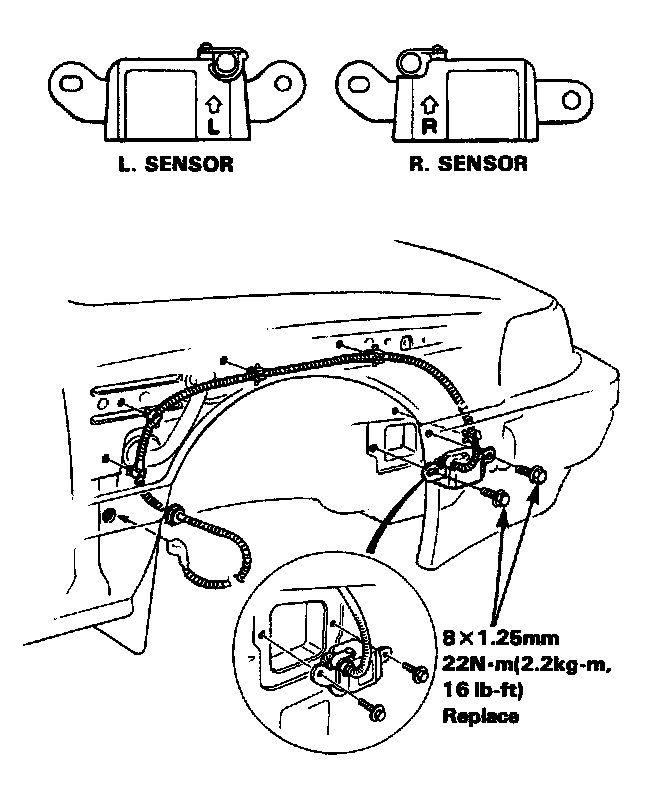
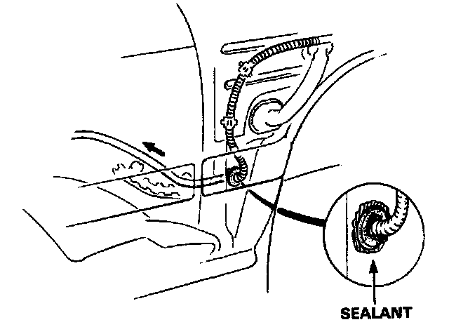
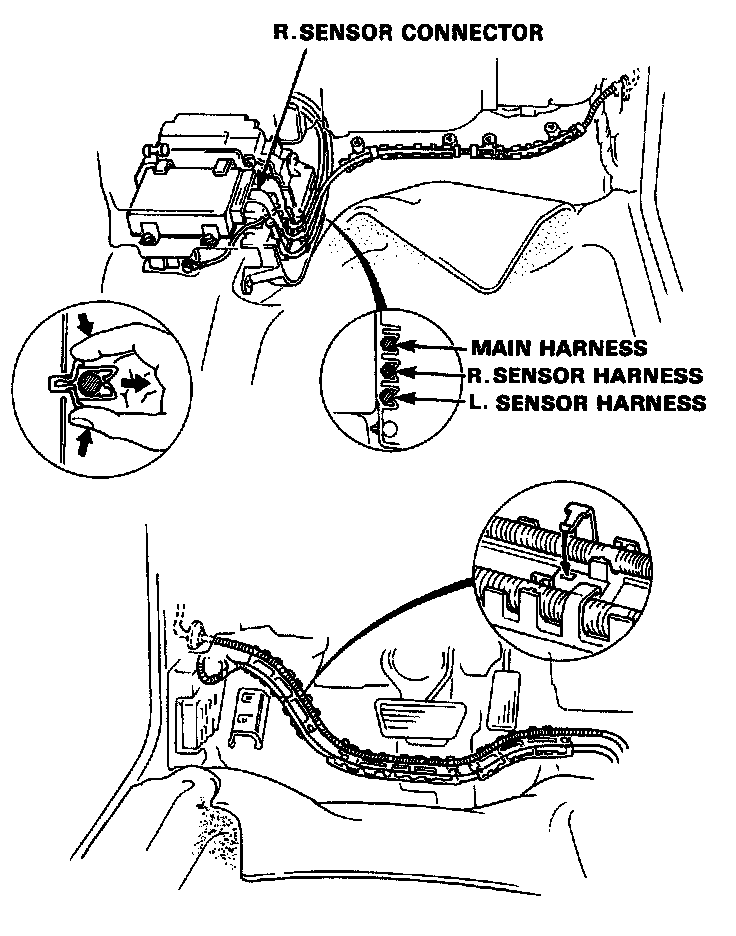
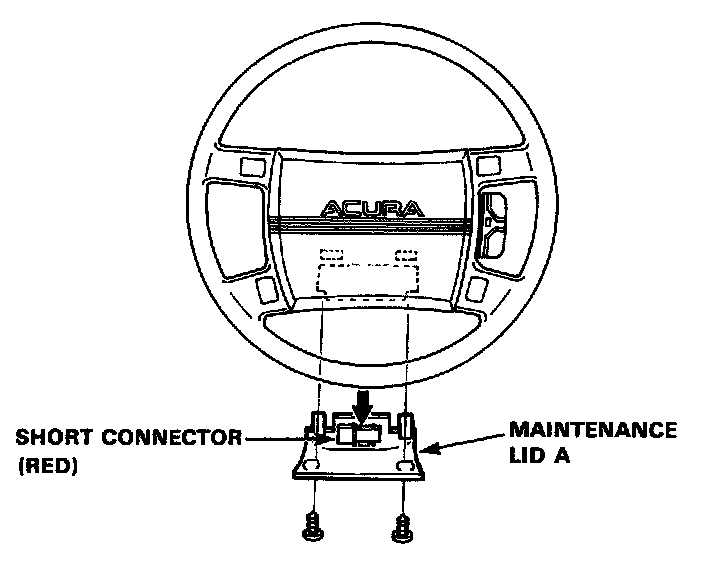

Front Sensors Installation
Front Sensors Installation
CAUTION:
- Be sure to install the harness wires so that they are not pinched or interfering with other car parts.
Replace a sensor if there are any signs of dents, cracks or deformation.
- For the SRS to function properly, the right and left sensors must be installed on the proper side.
1. Disconnect both the negative cable and positive cable from the battery.
2. Install the sensor and sensor harness.

3. Install the grommet on the body, and then seal it with waterproof sealant.

4. Clip the sensor harnesses into the harness holder, and connect them to the SRS unit.

5. Install the receiver tank, washer tank, resonator and inner fenders.
6. Disconnect the short connector from the airbag connector and connect the cable reel and airbag harness, refer to Steering and Suspension / Steering / Steering Wheel - Service and Repair.

NOTE: Reinstall the short connector. then put maintenance lid A back in position.
7. Install the PGM-FI ECU.
8. Connect the both negative cable and positive cable to the battery.
9. After installing the front sensors, confirm proper system operation.
- Turn on the ignition to II; the instrument panel SRS light should go on for about 8 seconds and then go off.